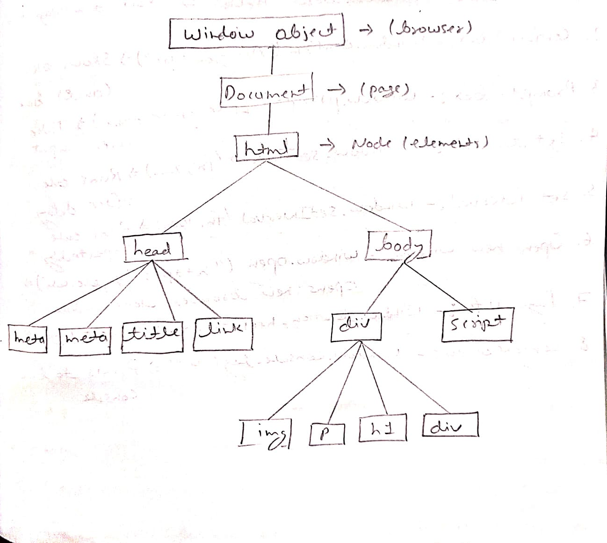

DOM (Document Object Model) in JavaScript
What is DOM?
-
The Document Object Model (DOM) is a programming interface for web documents.
It represents the structure of an HTML page as a tree-like model.
-
It provides a way for JavaScript to interact with HTML and CSS.

The DOM is used to access and modify elements of a web page dynamically using JavaScript.
JavaScript can use the DOM to perform various tasks, such as:
- Accessing and modifying HTML elements and their attributes
- Changing element content (text, images, etc.)
- Adding or removing elements from the document
- Handling user interactions like clicks and form submissions
- Modifying CSS styles dynamically
Window Object
- The window is the global object in a web browser environment.
- Everything in browser-based JavaScript runs inside the window object.
Common Window Properties and Methods
- Alert box –
window.alert("Alert!")
- Confirm box –
window.confirm("Are you sure?")
- Prompt box –
window.prompt("Enter your name")
- Set Timeout –
window.setTimeout(fn, timeInMs)
- Set Interval –
window.setInterval(fn, timeInMs)
- Open New Window –
window.open("URL")
- Page Info –
window.location.href
- Console Log –
window.console.log("Hello AI")
Document Object
- The document object represents the webpage loaded in the browser.
- Document = The entire HTML page that JavaScript can read, modify, or control.
- window.document = The webpage inside the browser window.
Common Document Operations
- Get element by ID
- Get elements by class name
- Get elements by tag name
- Query Selector
- Query Selector All
- Change Text
- Change HTML
- Change Style
- Create new element
- Append element
Example:
<body>
<h2 id="msg">Hello!</h2>
<script>
let text = document.getElementById("msg");
text.innerText = "Text Changed";
text.style.color = "red";
</script>
</body>